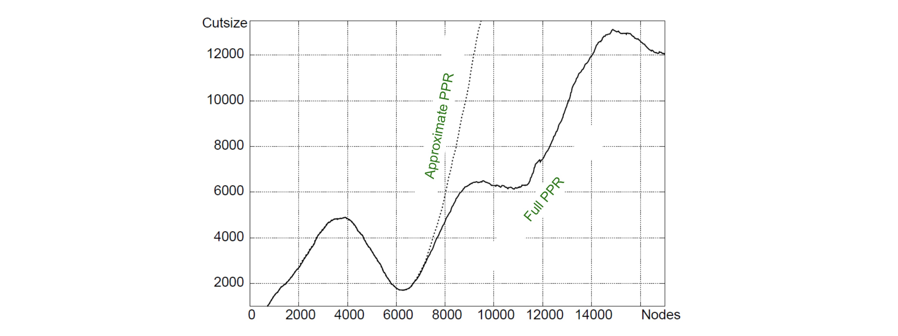

1. Introduction: Full PPR의 한계와 APPR의 등장 배경
이전 포스트들에서 다룬 Personalized PageRank (PPR)는 특정 시드 노드와의 네트워크 근접성을 측정하여 커뮤니티를 탐지하는 데 매우 유용합니다. 그러나 거대한 현실 세계의 그래프에서 이 알고리즘을 실제로 구동하려면 치명적인 문제가 발생합니다. 바로 전체 그래프를 연산해야 한다는 점입니다.
기존의 Power Iteration 방식은 동기식(Synchronous)으로 작동하여 매 반복마다 네트워크의 모든 노드 점수를 일괄적으로 업데이트해야 하므로, 찾고자 하는 국소 커뮤니티의 크기가 작더라도 전체 그래프 크기 \(O(|V|)\)에 비례하는 연산 시간이 소모됩니다.
이러한 한계를 극복하기 위해 제안된 것이 Approximate Personalized PageRank (APPR)입니다. APPR은 전체 노드를 동시에 업데이트하는 대신, 점수 갱신이 가장 시급한 노드부터 하나씩 비동기식(Asynchronous)으로 업데이트를 진행합니다. 이를 통해 약간의 근사 오차(Approximation)를 허용하는 대신 연산 시간을 획기적으로 단축할 수 있습니다.
2. 핵심 개념: Estimate Score와 Residual Score
- APPR이 전체 그래프를 탐색하지 않고도 작동할 수 있는 비결은 각 노드의 상태를 두 가지 점수로 분리하여 추적하는 데 있습니다.
- Estimate Score (\(r_u^{(t)}\)): 반복 단계 \(t\)에서 노드 \(u\)에 대해 지금까지 계산 및 누적된 ’추정 PPR 점수’입니다.
- Residual Score (\(q_u\)): 노드 \(u\)가 이웃 노드들에게 아직 전달하지 못하고 가지고 있는 ’잔여 점수’입니다.
- APPR 알고리즘의 목표는 추정 점수 \(r_u^{(t)}\)를 실제(True) PPR 점수인 \(p_u\)에 최대한 가깝게 만드는 것입니다. 이때 실제 점수 \(p_u\)는 미지의 값이지만 , 잔여 점수 \(q_u\)는 실제 점수와 추정 점수 사이의 오차 근사치인 \(q_u \approx |p_u - r_u^{(t)}|\) 처럼 행동할 것으로 기대할 수 있습니다. 따라서 네트워크 내 모든 노드의 잔여 점수 \(q_u\)가 충분히 작아지면 알고리즘을 종료해도 좋다는 수학적 기준이 마련됩니다.
3. APPR 알고리즘의 수학적 공식화
- APPR은 가장 급한(잔여 점수가 높은) 노드를 골라 자신의 점수를 확정 짓고 나머지를 이웃에게 뿌리는 Push(밀어내기) 연산의 반복으로 이루어집니다.
3.1. 초기화 (Initialization)
- 시드 노드(Seed node)를 \(s\)라고 할 때, 텔레포트 벡터 \(a\)는 시드 노드의 위치만 1이고 나머지는 0인 원-핫 벡터(One-hot vector)로 정의됩니다.
- 추정 점수는 0으로 초기화합니다: \(r = 0\).
- 초기 잔여 점수는 텔레포트 벡터로 설정합니다: \(q = a\). 즉, 초기 상태에서는 시드 노드만 막대한 잔여 점수(\(q_s=1\))를 가지며, 알고리즘의 다음 단계는 이 1이라는 점수를 이웃들에게 분배하는 것으로 시작됩니다.
3.2. Lazy Random Walk와 Push 연산
알고리즘은 매 반복마다 차수(degree, \(d_u\)) 대비 잔여 점수의 비율인 \(q_u / d_u\)가 가장 높은 노드 \(u\)를 찾아냅니다. 이 값이 사전에 정의한 임계값 \(\epsilon\)보다 크다면 (\(q_u / d_u > \epsilon\)), 해당 노드에 대해 Push 연산을 수행합니다.
Push 연산은 단순히 점수를 뿌리는 것이 아니라 Lazy Random Walk (게으른 무작위 행보) 개념을 사용합니다. \(push(u, r, q)\) 연산의 수식은 다음과 같습니다.
- 추정 점수 개선: 노드 \(u\)는 자신이 가진 잔여 점수 \(q_u\) 중 텔레포트(재시작) 확률인 \((1-\beta)\)만큼을 자신의 추정 점수로 확정(Store)하여 누적합니다. \[r'_u = r_u + (1-\beta)q_u\]
- 잔여 점수 보유 (Laziness): 나머지 전이 확률 \(\beta q_u\) 전체를 이웃에게 뿌리지 않고, 절반인 \(\frac{1}{2}\) 확률로 현재 노드 \(u\)에 머물게 합니다(Stay). 이것이 ’Lazy’라고 불리는 이유입니다. \[q'_u = \frac{1}{2}\beta q_u\]
- 잔여 점수 분배: 남은 절반의 확률에 해당하는 점수를 노드 \(u\)의 외향 간선(Outgoing edges)을 따라 이웃 노드 \(v\)들에게 균등하게 배분합니다. \[\text{for each } v \text{ such that } u \rightarrow v:\] \[q'_v = q_v + \frac{1}{2}\beta \frac{q_u}{d_u}\]
3.3. 왜 하필 Lazy Random Walk를 사용하는가?
일반적인 Random Walk 모델을 사용해도 알고리즘은 정상적으로 작동합니다. 그러나 일반적인 워크는 점수가 네트워크 전체로 너무 빠르고 넓게 퍼져버려(propagated) 국소성(Locality)이 떨어집니다.
반면 Lazy Random Walk는 점수 분배 시 절반의 잔여 점수를 자기 자신에게 남겨둠으로써 점수의 파동이 시드 노드 \(s\) 근처에 고도로 집중(Concentrated)되도록 만듭니다. 이는 \(q_u / d_u > \epsilon\) 테스트와 맞물려 국소적인 군집만을 빠르게 도출해내는 데 수학적 편의성과 탁월한 지역성을 제공합니다.
4. 효율적인 구현: Priority Queue (우선순위 큐)
알고리즘 루프에서 \(q_u / d_u\)가 가장 큰 노드를 매번 배열 전체를 뒤져서 찾는다면 \(O(|V|)\)의 시간이 걸려 APPR의 목적이 퇴색됩니다.
이를 해결하기 위해 최댓값을 효율적으로 반환하는 우선순위 큐(Priority Queue) 자료구조를 유지합니다. 우선순위 큐를 사용하면 가장 큰 잔여 점수 비율을 가진 노드를 즉각적으로 추출할 수 있으며 , 최댓값이 임계값 \(\epsilon\)보다 작아지면 즉시 알고리즘을 멈춥니다.
최적의 우선순위 큐가 구현되어 있다고 가정할 때, 하나의 노드 \(u\)를 꺼내어 이웃들에게 점수를 업데이트하는 Push 연산 1회의 시간 복잡도는 이웃의 수, 즉 노드의 차수에 비례하는 \(O(d_u)\)가 됩니다.
5. 종료 보장 및 계산 복잡도 증명 (Will It Finish?)
- APPR 알고리즘은 전체 네트워크의 크기 \(|V|\)와 무관하게 동작을 멈출 수 있을까요? 이를 증명하기 위해 전체 네트워크에 떠도는 잔여 점수의 총합 \(e \equiv ||q||_1\) 를 정의합니다.
5.1. 종료의 보장 (Monotonic Decrease)
어떤 노드 \(u\)에서 Push 연산을 1회 수행할 때 일어나는 잔여 점수의 변화량을 계산해 봅시다.
- 원래 노드 \(u\)가 가지고 있던 \(q_u\)가 사라집니다.
- \(u\)는 \(\frac{1}{2}\beta q_u\)를 가져갑니다.
- 이웃들은 다 합쳐서 \(\frac{1}{2}\beta q_u\)를 가져갑니다.
네트워크 전체에 남은 잔여 점수 총합의 변화량 \(\Delta e\)는 다음과 같습니다. \[\Delta e = \text{기존 점수} - \text{새로 분배된 점수}\] \[\Delta e = q_u - (\frac{1}{2}\beta q_u + \frac{1}{2}\beta q_u) = q_u - \beta q_u = (1-\beta)q_u\]
즉, Push 연산을 한 번 할 때마다 전체 잔여 점수 \(e\)는 정확히 \((1-\beta)q_u\) 만큼 감소합니다. \(e\)는 0 이하로 내려갈 수 없으므로, 이 값은 단조 감소(Monotonically decreases)하여 결국 0을 향해 수렴하며 알고리즘은 반드시 종료됩니다.
5.2. 그래프 크기에 독립적인 시간 복잡도
알고리즘의 시간 복잡도를 엄밀히 계산해 보겠습니다.
Push 연산이 실행되기 위한 조건은 \(q_u / d_u > \epsilon\) 이며, 이를 변형하면 \(q_u > \epsilon d_u\) 입니다.
따라서 Push 1회당 잔여 점수 감소량 \(\Delta e\)의 하한선(Lower bound)은 다음과 같습니다. \[\Delta e = (1-\beta)q_u > (1-\beta)\epsilon d_u\]
Push 1회를 수행하는 데 드는 연산 비용은 \(O(d_u)\)입니다.
그렇다면 잔여 점수 \(e\)를 ’1’만큼 떨어뜨리는 데 들어가는 평균적인(Amortized) 연산 비용은 얼마일까요? \[\text{Cost per unit drop} = \frac{O(d_u)}{(1-\beta)\epsilon d_u} = O\left(\frac{1}{(1-\beta)\epsilon}\right)\]
시작할 때 잔여 점수 \(e\)의 총합은 1이었습니다(\(q=a\), 원-핫 벡터이므로 합이 1). 이 1이라는 점수가 완전히 0이 될 때까지 소모되는 총 알고리즘 복잡도는 \(\Delta e\)가 1인 경우와 같으므로, 전체 복잡도는 \(O\left(\frac{1}{(1-\beta)\epsilon}\right)\) 로 도출됩니다.
놀랍게도, 이 최종 복잡도 수식에는 노드 수 \(|V|\)나 간선 수 \(|E|\)가 전혀 존재하지 않습니다. \(\beta\)와 \(\epsilon\)이 상수로 고정되어 있다면, 연산 시간은 그래프의 크기와 완전히 독립적(Independent of graph size)이게 됩니다! (상세한 수학적 증명은 F. Chung의 논문을 참조하시기 바랍니다 ).
6. Approximation Error (근사 오차와 한계)
- 그래프의 크기와 무관하게 국소 커뮤니티를 찾을 수 있다는 강력한 장점이 있지만, APPR은 어디까지나 ‘근사(Approximate)’ 알고리즘입니다.

위 실험 결과 차트에서 볼 수 있듯, 시드 노드 근처(초기 탐색 노드들)에서는 APPR이 Full PPR과 거의 동일한 최적의 Cutsize 분할을 찾아냅니다. 하지만 임계값 \(\epsilon\) 미만으로 잔여 점수가 떨어지면 전파를 강제로 멈춰버리기 때문에, 시드 노드에서 멀리 떨어진(far from the seed) 노드들에 대해서는 점수의 정확도가 급격히 하락(less accurate)하는 한계가 존재합니다.
결론적으로 APPR은 거대한 글로벌 네트워크 구조를 완벽히 파악하는 데는 적합하지 않으나, 타겟 노드 주변의 조밀한 국소 커뮤니티를 즉각적으로 추출해내는 추천 시스템 등에 매우 강력한 실용성을 자랑합니다.